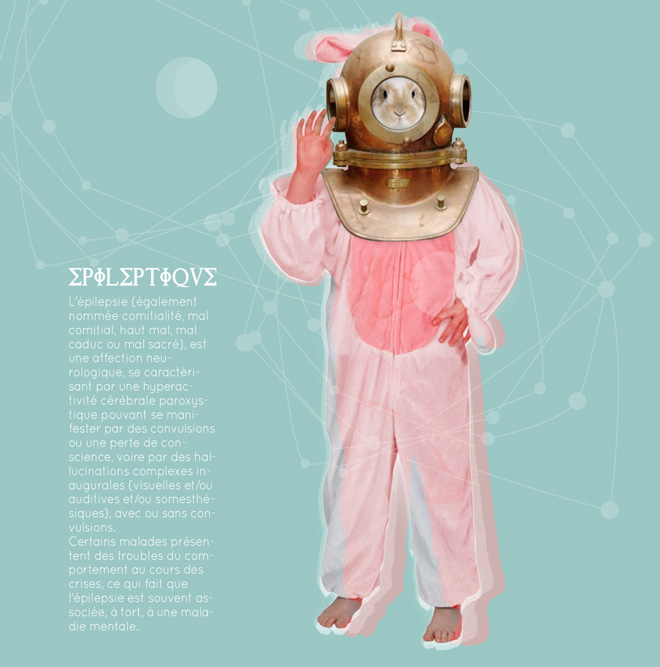

        <div class="pageloader_inner wrapper clearfix">
        <div id="entry-single">
            
            <aside id="sidebar" class="right_float">
            	<section class="sidebar_section">
                	<div class="entry-headline">
                        <div class="entry-title"><h4>Épileptique</h4></div>
                        <div class="entry-date">Print</div>
                    </div>
                    
                    <div class="entry-info">
                        <p>L'épilepsie (également nommée comitialité, mal comitial, haut mal, mal caduc ou mal sacré), est une affection neurologique, se caractérisant par une hyperactivité cérébrale paroxystique pouvant se manifester par des convulsions ou une perte de conscience, voire par des hallucinations complexes inaugurales (visuelles et/ou auditives et/ou somesthésiques), avec ou sans convulsions.
                        </p>
                        <p>
    
Certains malades présentent des troubles du comportement au cours des crises, ce qui fait que l'épilepsie est souvent associée, à tort, à une maladie mentale. 
                        </p>
                    </div>
                
                </section>
            </aside>
            
            <article id="maincontent" class="left_float">
              	
            	
			</article> <!-- END #maincontent -->
    	</div>        
	</div>
